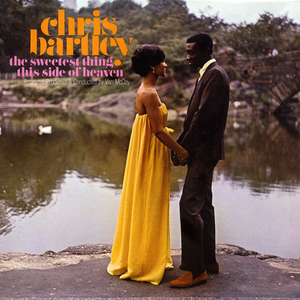

Chris Bartley
Leroy "Chris" Bartley was an American R&B singer. Bartley grew up listening to 1950s soul and doo wop, and formed his own group in the early 1960s with William Graham, Henry Powell, Sam Nesbitt, and Ronald Marshall. The group was initially called The Soulful Inspirations, but changed names several times, including a stint as The Mindbenders.
Complete Discography & Tracklists (1)